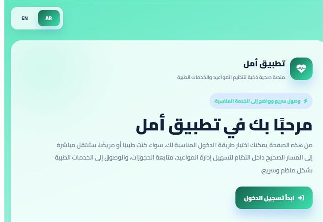
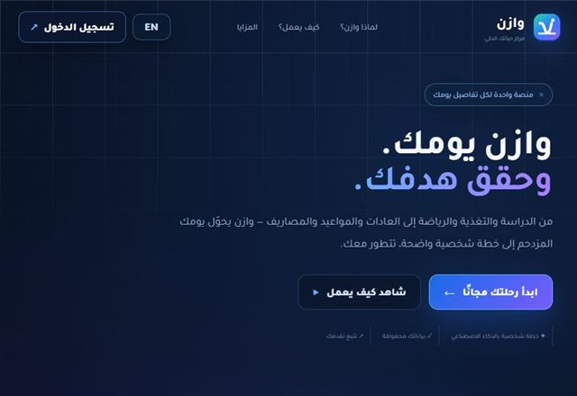
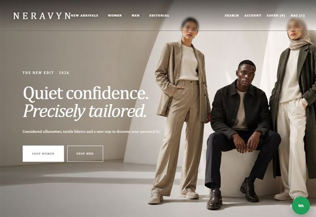
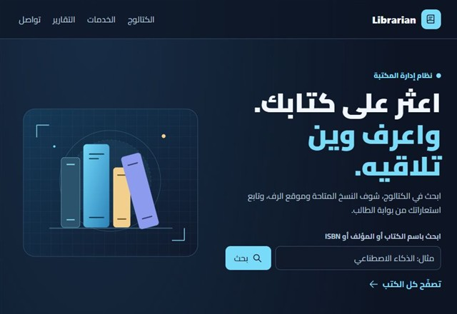

Digital health
Amal أمل
A healthcare platform with separate patient and doctor paths for booking and managing appointments.
- Separate patient and doctor entry points
- Appointment booking and management
Independent digital studio
Work directly with me on a business website, a web app interface, or an interactive catalog. Tell me what you need and we’ll define the scope together.
01 / Portfolio
Projects across healthcare, everyday planning, fashion, and library management.

Digital health
A healthcare platform with separate patient and doctor paths for booking and managing appointments.

Daily planning
A personal planner that brings study, fitness, nutrition, habits, and expenses together.

Fashion showcase
A contemporary fashion showcase with 40 looks, editorial collections, and an interactive catalog.

Library management
A university team project for organizing library books, members, and borrowing.

Arabic reading website
An Arabic reading website that organizes Quranic verses and explanations by theme.
02 / Services
We agree on the pages, features, and deliverables before work begins.
A responsive public website with a clear page structure. Handover can include the published site and source files.
See Amal’s public websiteUser flows, screen designs, and an interactive prototype when in scope.
See the Wazen dashboardProduct views, category filters, and an interactive browsing or demo shopping flow.
See the NERAVYN catalog03 / The studio
I’m Nezar Ahmad, the creator behind Forma Studio. I design and build websites and digital products, including Amal, Wazen, and NERAVYN.
About Forma StudioStrategy, design, and development.
From your first hello to launch day.
Good work starts with a good conversation.
04 / Process
A typical project moves through these three stages. We agree on the details together before starting.
We discuss the audience, goals, required pages or features, and target date. You get a written scope and an estimate before work starts.
I share the key screens or a prototype for feedback. We agree on the direction before development.
I build and test the agreed screens on desktop and mobile. You receive the agreed files, access, and a short guide if included.
05 / Contact
Tell me what you’re building, who it’s for, and when you’d like to launch.